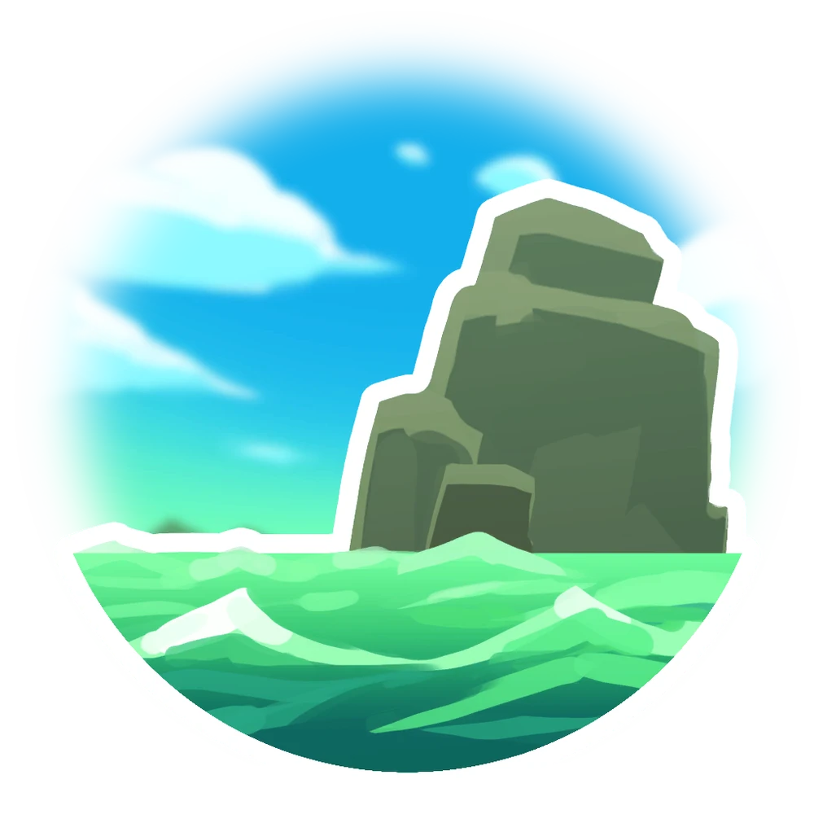

The Slime Sea
he Slime Sea that covers most of the Far, Far Range is something of a mystery. It is seemingly a mixture of water and slime that is believed to be the primordial pool where all slimes emerged, though its true purpose is entirely unknown by even the most esteemed slime scientists.